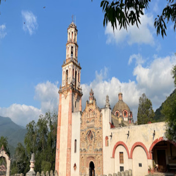

Historia
Landa de Matamoros tiene una rica historia que se remonta al siglo XVII. Fue fundado por una tribu de tarascos que emigraron desde Michoacán hacia el norte del país, buscando nuevas oportunidades y un lugar para asentarse. Este pintoresco pueblo ha sido testigo de muchos eventos históricos significativos. En 1919, se le añadió el nombre "Matamoros" en honor al patriota insurgente Mariano Matamoros, quien dejó una huella indeleble en la localidad al vivir aquí entre 1807 y 1808. Landa de Matamoros no solo ofrece un vistazo al pasado, sino que también invita a los visitantes a sumergirse en su vibrante cultura y tradiciones que perduran hasta hoy.
Atractivos Principales
Misión de Landa
La misión de San Francisco de Asís del Valle de Tilaco es uno de los monumentos históricos más importantes del municipio de Landa de Matamoros y de la región de la Sierra Gorda de Querétaro. Su estilo barroco en la portada es un intento de resurgimiento, ya que fue de las últimas construcciones del estilo que se hicieron en el territorio de Nueva España. La construcción de esta misión se atribuye a fray Junípero Serra.
Fósiles marinos de el Madroño
"¡Prohibido llevar fósiles!" es la advertencia que te recibe al llegar a este fascinante y misterioso lugar: las dunas de arena roja de El Madroño en el estado de Querétaro. Estas dunas son una evidencia clara de que hemos ingresado a un territorio lleno de vestigios ancestrales, hogar de los impresionantes fósiles marinos de El Madroño.
Hace cien millones de años, este sitio formaba parte de un litoral marino de baja profundidad. Hoy en día, El Madroño es un yacimiento de una belleza inexplicable, un verdadero tesoro paleontológico.
Al adentrarte en este lugar, te rodean miles de rocas calizas, cada una incrustada con una abundancia de fósiles perfectamente conservados: moluscos, gasterópodos, amonitas, crustáceos y corales, todos testigos silenciosos de una era antigua.
El verdadero desafío para los visitantes no es encontrar fósiles, sino evitar destruirlos al caminar entre ellos, dada su cantidad y fragilidad.
Este sitio tan singular se encuentra en el municipio de Landa de Matamoros, cerca de San Luis Potosí, una región que se distingue por su exuberante naturaleza y paisajes impresionantes.
Se desaconseja visitar este lugar durante la temporada de lluvias, ya que la arena roja se convierte en un lodo difícil de limpiar, complicando la exploración. Ven y descubre El Madroño, donde cada paso te conecta con la historia profunda de nuestro planeta.
Cultura
Landa de Matamoros es un municipio con profundas raíces culturales y tradiciones que se mantienen vivas hasta el día de hoy. Las festividades más importantes incluyen la Fiesta de San Francisco y las celebraciones en honor a la Virgen de Guadalupe, donde se mezclan rituales indígenas y cristianos.
La artesanía local es diversa, con productos que incluyen textiles, cestería y cerámica, todos ellos reflejando el talento y la identidad cultural de la región.
Gastronomía
La gastronomía de Landa de Matamoros es una fusión de sabores tradicionales de la Sierra Gorda. Algunos de los platillos más populares son las enchiladas queretanas, el mole de guajolote, y los tamales de maíz.
Los visitantes también pueden disfrutar de bebidas tradicionales como el mezcal y la bebida de cebada, que son el complemento perfecto para los sabores únicos de la región.